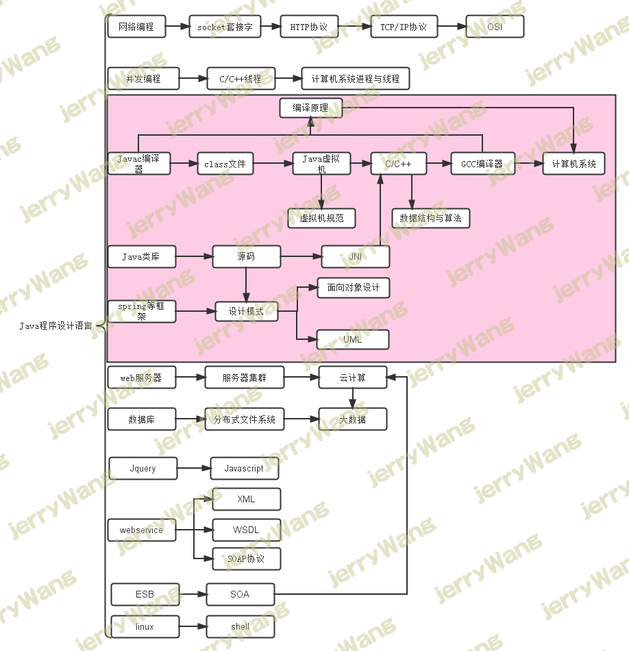

浅谈程序猿书籍的选择，你会如何选择你的爱书呢
引言
本篇博文的想法来源于跟群里的猿友们的交流，LZ发现很多人会说自己很迷茫，不知道要学什么。之前LZ已经写过相关的文章，文章指出了程序猿需要掌握的一些内容，但是当中LZ也表达了一个观点，就是LZ个人不太喜欢给人推荐书籍。因为LZ觉得，书籍的选择与职业的道路一样，充满着个性化，每个人适合的都不一样。所以没有最好的书籍，只有适合的书籍，这和找女朋友是一样的。
写这篇文章的目的，是为了帮助一些迷茫的猿友们，走出书籍制造的迷雾森林，选择一条尽可能适合自己的最短路线走出来。鉴于一些猿友对书籍的选择毫无重心，浪费了很多无谓的时间。因此尽管书籍是比较个性化的，但是考虑到选择的路线还是有相同之处的，所以LZ就斗胆开了这么一篇博文，希望能给各位猿友一些有效的建议，以期能起到一些微薄之力。
对象范围
为了避免不必要的争议，LZ这里还是要限定一下读者范围。本文的读者应该是正在从事或未来即将从事程序猿一职的编码工作，并主要依赖于某一种程序设计语言的猿友们。倘若你并不打算成为一名悲催的程序猿，又或者你并不打算依赖某一种语言生存，而是准备做一个全能人士，那么本文对你来说已毫无意义，可单击浏览器右上方的叉叉按钮。
另外需要一提的是，由于LZ本人是非计算机专业出身，因此本文的内容对于中途改行做程序猿的朋友可能会更加适合一些。至于原本就是计算机专业的猿友们，可能会有一些不同，但这并不妨碍各位以此作为一个参考。不过LZ这里依然要扔出来那句话，此为LZ一家之言，各位猿友看完之后，还需要有自己的思考。
浅谈深度
很多人感觉迷茫的原因，就是因为自己懂的也不少，但是真要问自己有哪些特别擅长的东西，却发现竟然一个都想不起来，也就是所谓的深度不够。
大部分人肯定都希望自己的深度足够，生怕自己变成一个万能的废物。但是不知道各位猿友有没有思考过，到底何为深度？倘若你连深度是什么都不知道，又何谈提高自己的深度呢？
LZ这里要给深度下一个定义，以表示LZ粗浅的理解。在LZ个人看来，一个简单的理解，深度就是指在某一个领域的知识范围之内（这里特指技术方面），你知道很多别人不知道的秘密，通俗的理解就是你成为了某一个领域的专家，这就称之为深度。举个例子，对于Java和.NET来讲，都是运行在VM上的，那么如果你懂了VM的秘密，就说明你在Java和.NET领域当中，有了一定的深度，尽管这个深度只是一点点罢了。
换句话说，如果你深刻了解了某一个领域当中所有或者说大部分的知识，并将这些知识融会贯通，那么你就成为了这个领域的专家，也就是俗称的“你是有深度的”。因此这里的难度就在于，如何判断某一个知识处于我们所在的领域当中。
无脑选书
上面已经提到，我们增加深度的最大阻碍就在于，如何判断一个知识是否处于我们所在的领域当中，说的通俗一点，就是判断一本书我们是否该读。这也是造成很多人学习迷茫的主要原因，因为很多人选择书的方式是被动选择，比如让别人推荐，或者从网上《XXX必读的几本书》这种文章上拔下来的，尤其是某些博客大牛推荐的书籍，更容易引起新手们的无脑追捧。
为何从来不会自己选择书籍呢？
LZ的观点一直都是，不可不信，不可全信。高手们推荐的书籍自然是值得注意的，但是也要自己筛选，而且更重要的是要看时机，千万不可一股脑收下。除非你能保证，你在读任何一本高手推荐的书籍时，都能与他保持一模一样的客观与主观的环境。比如思维方式、技术水准、知识体系、工作经历等等，如果这些条件都一样，那LZ不反对你照搬无误的将这些书全部读一遍。
有的猿友倒不会无脑选择别人推荐的书籍，不过却更加糟糕。他们选择书籍的方式是一些非常奇葩的标准，比如太厚的不想看，太枯燥的不想看，看不懂的不想看等等。这种情况更加危险，这种完全根据自己喜欢来选择书籍的方式，纯属安乐死。之所以叫安乐死，就是因为这种选书方式，你会发现你看的非常舒服，因为不舒服的都被你排除掉了，但是却对你的提高十分有限。
这算是LZ见过的，两种最无脑的选书方式，也是LZ个人极其不推荐的方式。如果你现在还是处于这样的过程当中，请务必尝试改变这种方式。
选书也是一种思考
LZ推荐的一种选书方式，就是在思考中选择书籍，而且这种思考有时候比你读书更重要。估计有的猿友不服了，选个书而已，至于说的这么神秘吗。猿友们先遏制下内心的这种想法，LZ之所以这么说，肯定是有一些自己的理由的，绝非大放厥词。LZ说一个自己选书的例子，各位就知道LZ为什么这么说了。
第一本LZ读的书，是大名鼎鼎的Java宝典编程思想，当时读完以后，感觉对Java当中的概念清晰了很多。比如初始化、泛型、拆装箱等等一些比较基础但却很重要的内容，不过由于当时LZ只是第一次主动买书读书，因此并没有存货。于是接下来，LZ就开始思考接下来到底应该买什么书。
各位猜一下，LZ当时选择的书是哪些？当时思考了很久，LZ选择了两本书，一本是Java虚拟机相关的书籍，一本是编译原理这本龙书（电子版）。为什么选择这两本书，而不是其它的书呢？
因为LZ渐渐思考清楚了两件事，想要彻底明白初始化等一些Java内部机制的原理，答案就在Java虚拟机当中。而想要彻底清楚泛型和自动拆装箱等一些编译器给的糖衣炮弹，答案就在编译原理当中，更确切的说，是在Javac编译器当中。这一思考让LZ对Java的生态系统清晰了很多，因为LZ抓住了几本书之间的联系，而每本书其实就是一个大的知识点，将这些大知识点在你心中形成一个知识网，绝对比你读一本书的价值要大，这不正是传中说融会贯通的过程吗。
这样选择书籍还有一个附加好处，就是因为你想要的答案就在你所选择的书籍当中，因此你看起来大部分时候不会感觉无趣，甚至会十分迷恋也是正常的，这就要看你的求知欲和好奇心有多大了。
因此LZ给各位猿友一个建议，在每次读完一本书的时候，就将你现在已经读过的书在你心中形成一个关系图，然后寻找下一个节点应该在哪，这个节点代表的应该是一个知识点。只要你选定了下一个知识点，那么具体书籍的选择参考高手们推荐的书籍并非不可。
比如LZ当时选择Java虚拟机书籍的时候，就是看到的一位高手推荐的书籍。不过请注意LZ选择的顺序，LZ并不是先看到的这位高手的推荐，然后直接就去买他推荐的Java虚拟机书籍了，而是LZ先一步想要找Java虚拟机相关的书籍，后面才找到的这篇文章，进而才采用的这位高手推荐的书籍。
所以LZ更愿意回答“龙哥，我想找一本XXX（比如Java虚拟机这一类任意一个知识点）相关的书籍，你能给我推荐一本吗”这样的问题，而不是直接问LZ“龙哥，给我推荐几本书吧”这样的问题。说实话，LZ并不知道你的知识体系，你走到哪里了，该看什么了，恕LZ无法给你推荐任何书。
LZ现在的知识体系
LZ现在简单罗列一下自己的知识体系，这其实算是LZ选择书籍的路线，这其中不会包含任何一个具体的书名，只是一系列知识点的关联。另外，LZ是主Java的程序猿，因此这个体系图更多的是给Java的猿友们参考的。不过.NET的整体架构与Java还是十分相似的，因此对于.NET的猿友们来说，也并非毫无价值。

在此LZ必须声明，以上体系完全是LZ根据自己的情况所画的，因此不具备任何权威意义，任何人都可以根据自己的需要调整，而且图中的知识联络也并非十分严谨，只是LZ个人的一个简单的串联而已。图中所标注的Java领域的知识其实也是不全的，因为这只是目前LZ已经了解或准备了解的内容而已。
不过从这里也能看出来，Java这个入门简单的语言其实非常不简单，就图上的内容就够我们喝一壶的了，更何况这里还不全。对于.NET来说，尽管LZ并不了解，但相信也是一样的。因此各位千万不可掉以轻心，千万别让自己这个屌丝青蛙，没当上王子，却被温水煮死了。
深度与广度
各位看到上面的内容，估计会有点晕菜，不是说要深度吗，上面这么多东西需要学习和了解，如何能有深度。其实这个担心没有错，也正因为如此，LZ才将上面的一部分内容加上了红色背景，被LZ将背景标红的那部分，就是LZ现阶段学习的主线。
红色背景的内容就是深度的保证，而其余的部分，则是在此基础上广度的扩张。因此，LZ有一个很重要的忠告，就是千万不要被上面的知识体系迷惑了，红色背景部分才是我们的主线。我们学习的任何其它内容，都应该是为了主线服务的，而且通常情况下，这些内容我们并不都需要精读。
对于经常讨论的有关深度与广度的问题，就像先有鸡还是先有蛋一样，没有鸡哪来的蛋，而没有蛋又哪来的鸡。同样的，没有深度哪来的广度，没有广度又何来的深度，这样纠结的问题LZ还是决定不搀和进来了，而且这样的争论其实毫无意义。
我们这里只谈谈学习的过程应该是怎样的，LZ个人的想法是，学习的过程就像爬金字塔一样，我们从最底层的基础开始爬，而最底层是最广的，因为需要很多的铺垫才可以继续攀登金字塔，如果你足够努力与幸运，最终可能可以爬到金字塔尖上。对于LZ这种非计算机专业的同学来说，属于一上来就爬到了一定高度的情况，在这个时间，我们必须有事没事就回去修修你的金字塔底层，直到牢固为止，否则就算你继续向上爬到一定高度，也一定会摔下来的。
金字塔尖是特别窄小的，否则也不可能称为尖。由此可见，我们学习的过程应该是从基础渐渐攀爬的过程，是将掌握的领域无限压缩并提升的过程，最终将我们的知识压缩成一个锋利的塔尖，直插云霄。不过需要注意的是，你爬的越高，应该看得越远，而不能只盯着你的金字塔尖，否则你得到了金字塔尖，却会失去你身边广阔的天空。
小结
作为一个程序猿来讲，学习确实是很重要的一环，而学习的过程中，书籍的选择又是重中之重。所以我们平时多花一些时间去选择一本合适的书籍，是非常值得的，书籍才真的应该是宁缺毋滥，与其将时间浪费在一些相对无用的书籍上面去，还不如好好的思考一下你的知识网，谨慎的选择下一个知识节点，下一本书。
 微信
微信 支付宝
支付宝